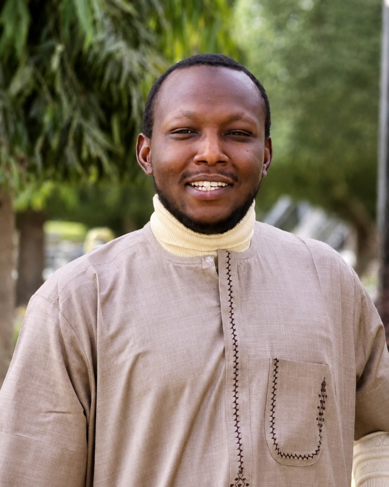

Lecturer · MRI Specialist Radiographer · Medical Imaging Researcher
Abdulrazaq
Abdulrazaq
Zubair
Federal University of Health Sciences, Azare (FUHSA) — African Institute for Research Advancement & Innovation (AIRA Africa)

About
Lecturer, MRI specialist radiographer, and medical imaging researcher with over nine years of experience in clinical radiography, MRI, ultrasound, and CT. My work sits at the intersection of clinical imaging, neuroimaging, and artificial intelligence, with a strong focus on patient safety, workflow optimization, and equitable access to high-quality imaging — particularly in resource-limited settings.
I have held academic and clinical leadership roles, training medical radiography students and coordinating advanced imaging and neuroimaging services in Nigeria. I am currently pursuing a PhD in Medical Radiography at Bayero University Kano, exploring AI-assisted workflow enhancement in MRI with emphasis on safety and image quality optimization.
Education & Training
Certifications & Advanced Training
Experience
- Oversee all institutional activities, including ongoing studies and mentorship programs.
- Deliver online lectures and lead community outreach activities.
- Design and deliver lectures and clinical tutorials in general radiography and MRI.
- Supervise students, update curricula, and promote interdisciplinary learning.
- Lead departmental outreach and research capacity-building initiatives.
- Oversee MRI, CT, X-ray, and ultrasound operations.
- Implement QA/QC protocols and safety compliance audits.
- Train and mentor interns and student radiographers; maintain digital imaging systems (RIS/PACS).
- Supervised and coordinated the activities of radiography staff to ensure efficient service delivery.
- Oversaw workflow, scheduling, and resource allocation within the radiology department.
- Developed and implemented standard operating procedures (SOPs) for radiographic services.
Selected Publications
Awards & Activities
Skills
Contact
Show addresses
Three inboxes, depending on what it’s about — institutional, personal, or AIRA Africa.
Start a chat
Tell me who you are and what it’s about — the chat opens with your message ready to send.
Direct line
Request the number
The line is kept private. Enter your name and reason to reveal it and place the call.
Languages — English (fluent) · Hausa (native) · Arabic (intermediate)